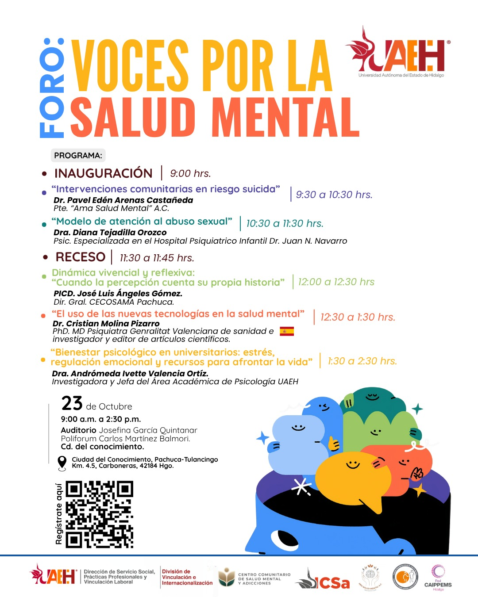

9:30
a.m.
a.m.
Un espacio de diálogo, reflexión y participación para abordar temas fundamentales de la salud mental desde distintas perspectivas.

Voces por la Salud Mental reúne especialistas y comunidad universitaria para conversar sobre prevención del suicidio, atención al abuso sexual, bienestar psicológico y el impacto de las nuevas tecnologías en la salud mental.
Este foro busca promover una mirada integral, generar conciencia y fortalecer herramientas para afrontar los retos emocionales de la vida cotidiana, especialmente en los espacios universitarios y comunitarios.
Consulta los temas, horarios y especialistas que participarán.

Presidente de “Ama Salud Mental” A.C.
Es médico cirujano egresado de la Universidad Nacional Autónoma de México (UNAM), especialista en Psiquiatría por el Hospital Fray Bernardino Álvarez y en Psiquiatría Infantil y de la Adolescencia por el Hospital Psiquiátrico Infantil Dr. Juan N. Navarro.

Psic. especializada en el Hospital Psiquiátrico Infantil Dr. Juan N. Navarro
Es doctora en Alta Dirección en Establecimientos de Salud, cuenta con una maestría en Ciencias, con especialidad en Neurobiología, por el Instituto de Neurobiología de la Universidad Nacional Autónoma de México (UNAM).

Dir. Gral. CECOSAMÁ Pachuca
Médico Cirujano egresado de la Universidad Autónoma del Estado de Hidalgo (UAEH), con una sólida trayectoria en salud mental, prevención y tratamiento integral de las adicciones.

Investigador especializado en temas de salud mental · España
Es médico especialista en Psiquiatría, con experiencia clínica en el Hospital Virgen de los Lirios y en el Centro de Salud Mental (CSM) La Fábrica, en Alcoy, Alicante, España, donde participa en la atención de pacientes y en la Unidad de Primeros Episodios Psicóticos.

Investigadora y Jefa del Área Académica de Psicología UAEH
Licenciada en Psicología y doctora en Psicología de la Salud por la Universidad Nacional Autónoma de México (UNAM), con formación especializada en el estudio de las enfermedades crónico-degenerativas en la infancia, particularmente en el ámbito de la psicooncología pediátrica.
Sigue la transmisión del Foro Voces por la Salud Mental UAEH.
Escanea el código QR o utiliza el botón para acceder al formulario de registro.
Abrir registro